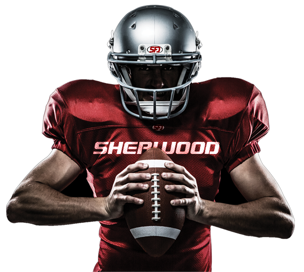

Sports Arena
You develop your skills as you beat hours and hours of practice
@rez_nabid
Play your favorite game here

Football in Sports Arena
American football is a beloved sport that has captured the hearts of many Americans and fans around the world. The game is known for its intensity, physicality, and strategic gameplay, making it one of the most exciting and popular sports in the world. One of the reasons American football is so popular is due to the sheer athleticism required to play the game. Players must possess a combination of speed, strength, agility, and endurance in order to succeed on the field. They must also possess excellent hand-eye coordination, quick reflexes, and the ability to think on their feet in order to make split-second decisions.In addition to athleticism, American football is also known for its complex strategic gameplay. Each team has a playbook filled with hundreds of plays, and coaches must carefully choose which plays to use based on the situation on the field. The offense must work together to move the ball down the field and score touchdowns, while the defense must work to stop the opposing team from scoring. There are also special teams, such as the kicker and punt returner, who play a vital role in the game. American football games are played on a rectangular field that is 120 yards long and 53.3 yards wide. The field is divided into 100-yard increments, with end zones on each end where teams score touchdowns. The objective of the game is to score points by either carrying the ball into the opposing team's end zone or by kicking the ball through the opposing team's goalposts. The game is divided into four quarters, each lasting 15 minutes, with a halftime break in between the second and third quarters. The clock stops after each play, allowing for strategic timeouts and giving teams time to regroup and plan their next move. Another aspect of American football that makes it unique is the level of physicality involved in the game. Players wear helmets, pads, and other protective gear to help prevent injuries, but collisions and tackles are still a regular occurrence. This physicality is part of what makes the sport so thrilling for fans, but it also puts players at risk for serious injuries, such as concussions. Despite the risks, American football remains one of the most popular sports in the United States, with millions of fans tuning in to watch games every week. The Super Bowl, the championship game of the National Football League (NFL), is one of the most-watched television events in the world, with millions of viewers tuning in from around the globe. American football has also had a significant impact on American culture. The sport has spawned countless movies, TV shows, and books, and it has become a staple of American sports culture. The halftime show of the Super Bowl, which features performances by some of the biggest names in music, has become one of the most-watched events in entertainment. In conclusion, American football is a sport that combines athleticism, strategy, and physicality to create one of the most exciting and popular sports in the world. Its impact on American culture is undeniable, and its popularity continues to grow both in the United States and around the world. Whether you're a die-hard fan or a casual observer, there's no denying the thrill of watching American football in the sports arena.